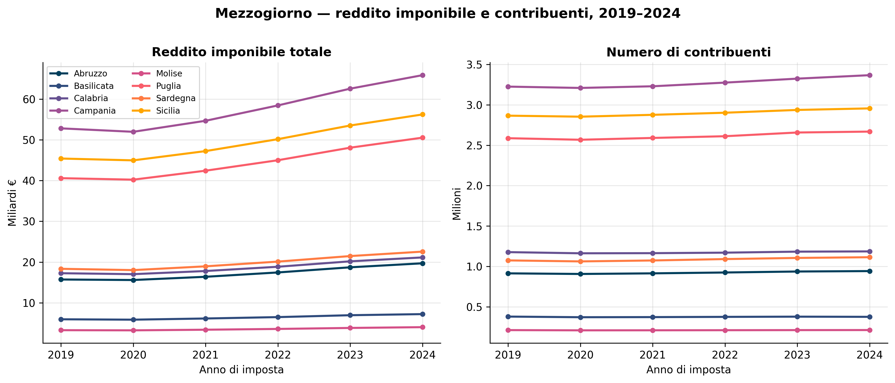
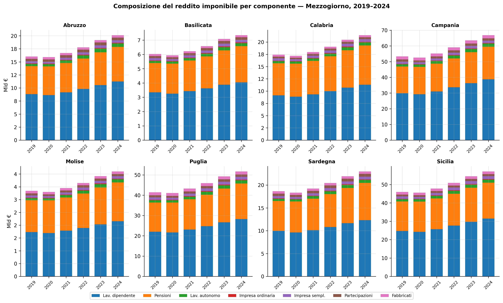
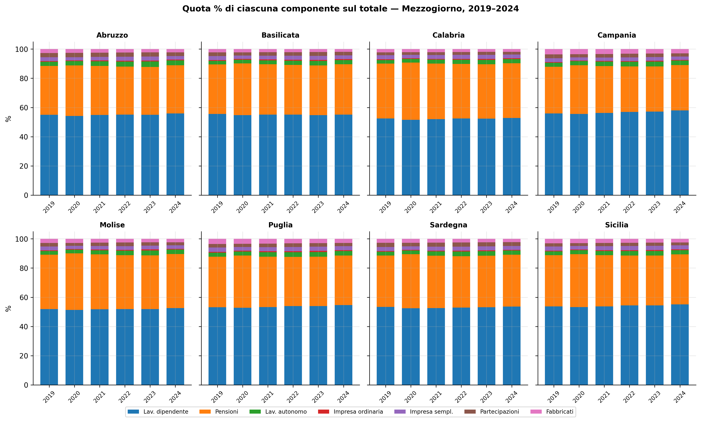
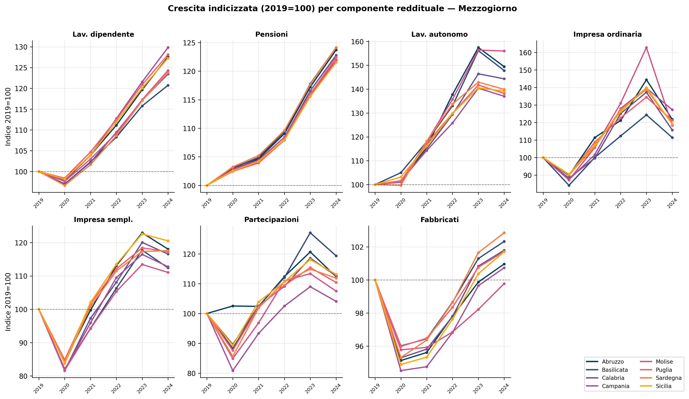
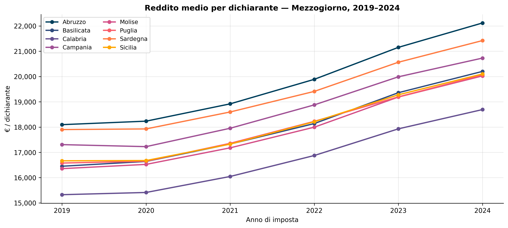
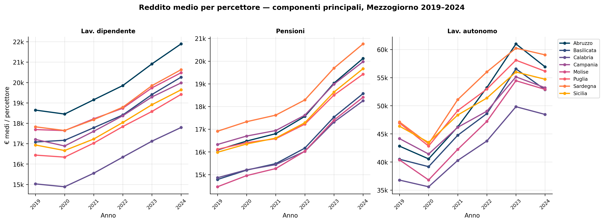
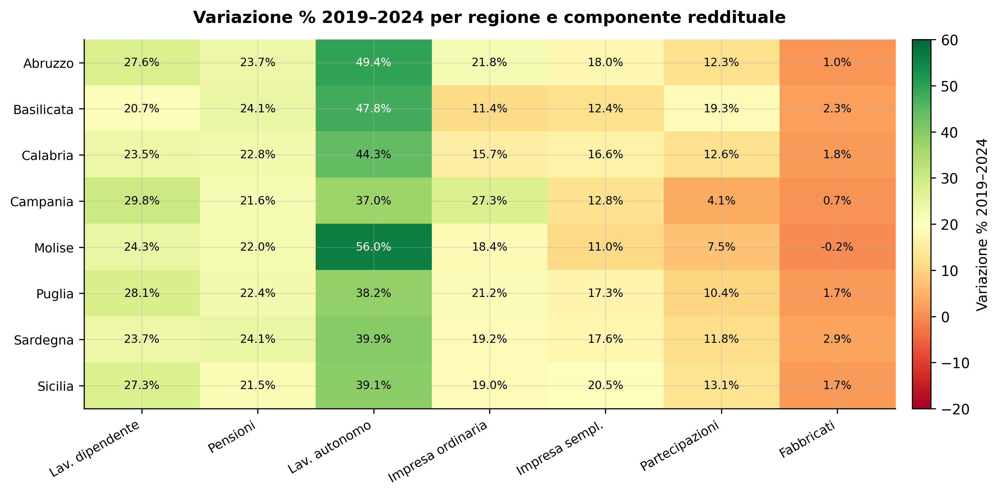
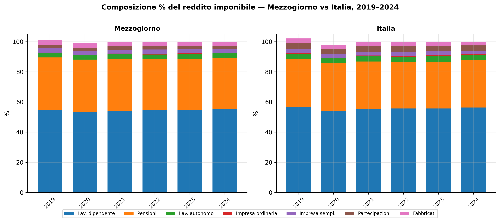
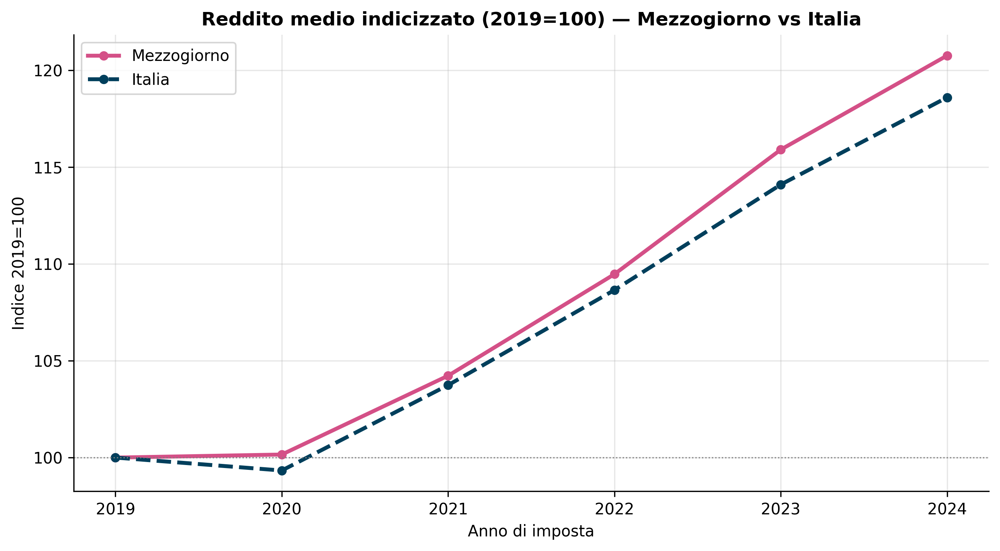
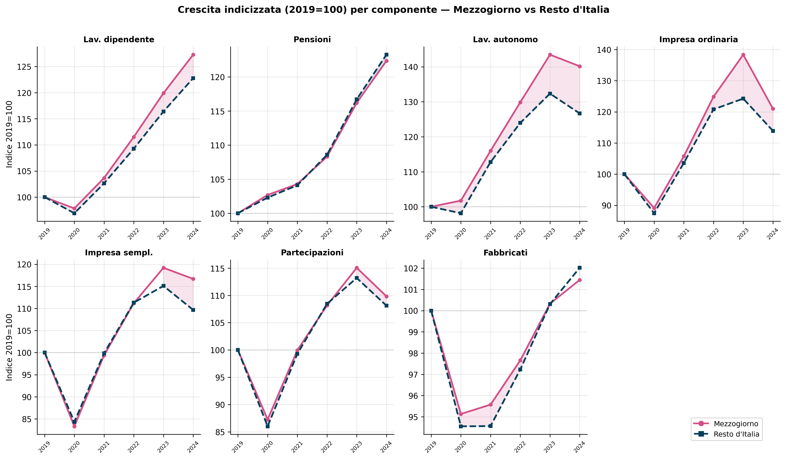

IRPEF nel Mezzogiorno
Andamento delle componenti reddituali nelle 8 regioni meridionali, 2019–2024
Paolo Volterra ![]()
Analisi delle dichiarazioni dei redditi (MEF) per le 8 regioni del Mezzogiorno nel periodo 2019–2024. Vengono esaminate le principali componenti reddituali — lavoro dipendente, pensioni, lavoro autonomo, impresa ordinaria, impresa semplificata, partecipazioni e fabbricati — attraverso l’andamento in termini assoluti, la composizione relativa e la crescita indicizzata rispetto al 2019. L’obiettivo è mettere in luce le dinamiche post-COVID e le specificità strutturali del mercato del lavoro meridionale.
IRPEF, Mezzogiorno, redditi, componenti, MEF, Sud, 2019-2024
1 Panoramica: reddito complessivo e contribuenti

Nel quinquennio 2019–2024 tutte e otto le regioni meridionali registrano una crescita robusta del reddito imponibile aggregato, con variazioni comprese tra il +21,4% della Basilicata e il +25,3% dell’Abruzzo. Campania (+24,7%) e Puglia (+24,5%) spiccano per la massa assoluta di reddito aggiunto: la Campania passa da 52,8 a 65,9 miliardi di euro, la Puglia da 40,6 a 50,5 miliardi. Il dato più rilevante emerge però dal confronto tra le due serie: a fronte di una crescita del reddito nell’ordine del 22-25%, il numero di contribuenti rimane pressoché stabile — in molte regioni la variazione non supera il 2-3%. Questo disaccoppiamento indica che la crescita è quasi integralmente di natura intensiva (redditi medi più alti per gli stessi contribuenti) e non estensiva (aumento della platea dei dichiaranti). Il calo del 2020 è visibile in tutte le regioni e riflette l’impatto del COVID-19 sui redditi da lavoro e da impresa; il rimbalzo del 2021 è altrettanto generalizzato, seguito da una fase di accelerazione nel 2022-2023 trainata dalla rivalutazione delle pensioni e dalla crescita salariale post-contrattuale.
| 2019 | 2020 | 2021 | 2022 | 2023 | 2024 | Δ 2019-24 (%) | |
|---|---|---|---|---|---|---|---|
| regione | |||||||
| Abruzzo | 15.7 | 15.6 | 16.4 | 17.4 | 18.7 | 19.7 | 25.5 |
| Basilicata | 5.9 | 5.9 | 6.1 | 6.5 | 6.9 | 7.2 | 22.0 |
| Calabria | 17.3 | 17.0 | 17.8 | 18.8 | 20.2 | 21.1 | 22.0 |
| Campania | 52.8 | 52.0 | 54.7 | 58.4 | 62.6 | 65.9 | 24.8 |
| Molise | 3.3 | 3.2 | 3.4 | 3.6 | 3.8 | 4.0 | 21.2 |
| Puglia | 40.6 | 40.2 | 42.4 | 45.0 | 48.1 | 50.5 | 24.4 |
| Sardegna | 18.3 | 18.0 | 18.9 | 20.1 | 21.5 | 22.6 | 23.5 |
| Sicilia | 45.4 | 45.0 | 47.2 | 50.2 | 53.5 | 56.2 | 23.8 |
Tabella 1: Reddito imponibile (Mld €)
La tabella conferma la traiettoria ascendente con coerenza notevole: nessuna regione scende al di sotto del +21% nel periodo considerato, un risultato apprezzabile anche al netto dell’inflazione cumulata 2019-2024 (circa +18-19% secondo l’IPCA). In termini reali, la crescita residua è quindi modesta ma positiva per quasi tutte le realtà meridionali. La Basilicata (+21,4%) e la Campania (+24,7%) definiscono i due estremi; la dispersione contenuta suggerisce che la dinamica di base — rinnovi contrattuali, rivalutazione pensionistica, ripresa post-pandemica — ha operato in modo abbastanza uniforme su tutto il Mezzogiorno.
2 Composizione del reddito per regione

In valori assoluti, il lavoro dipendente (blu) è la voce dominante in tutte e otto le regioni e assorbe tra il 51% (Calabria, Molise) e il 58% (Campania 2024) del reddito totale. Le pensioni (arancione) costituiscono la seconda componente, con un peso particolarmente elevato in Calabria e Molise dove sfiorano il 38%: un segnale della struttura demografica più anziana e del mercato del lavoro più fragile di queste regioni rispetto ad Abruzzo e Campania. Visivamente, il blocco dipendente+pensioni occupa oltre l’85% di ciascuna barra, lasciando poco spazio alle restanti cinque componenti. Le barre crescono in modo abbastanza omogeneo anno per anno, senza discontinuità improvvise eccetto il lieve assestamento del 2020. Il lavoro autonomo (verde) appare come una striscia sottile ma percettibilmente più alta nel 2024 rispetto al 2019, anticipo di quanto si vedrà nel grafico indicizzato.

Il grafico in quote percentuali rivela quanto la struttura del reddito meridionale sia rimasta sostanzialmente stabile nel quinquennio. Le variazioni di composizione sono dell’ordine di 1-2 punti percentuali: il lavoro dipendente guadagna qualche decimale in quasi tutte le regioni (Campania da 56,0% a 58,0%, la variazione maggiore), mentre le pensioni cedono marginalmente terreno ovunque tranne in Basilicata (+0,6 pp) e Sardegna (+0,3 pp). Il lavoro autonomo cresce in quota di 0,4-0,7 pp in tutte le regioni, pur rimanendo sotto il 3,5%: un segnale di recupero reale ma ancora limitato. I fabbricati (rosa) mantengono una quota pressoché invariata intorno al 3-4%, coerentemente con la stasi dei valori catastali. L’assenza di variazioni brusche suggerisce che le politiche di sostegno al reddito durante la pandemia (cassa integrazione, sussidi) hanno preservato la struttura preesistente piuttosto che alterarla.
3 Crescita indicizzata 2019 = 100

Questo è il grafico più informativo dell’analisi perché libera le traiettorie dai diversi punti di partenza assoluti. Emergono quattro velocità nettamente distinte. Lavoro autonomo: la componente più dinamica, con crescite 2019-2024 comprese tra +37% (Campania) e +56% (Molise); la traiettoria è quasi verticale dal 2021, probabilmente amplificata dall’effetto combinato della ripresa post-COVID e dell’espansione del regime forfettario. Pensioni: linee molto compatte e parallele (+22-24%), con un’accelerazione visibile nel 2022-2023 riconducibile alla rivalutazione piena dell’assegno pensionistico sull’inflazione elevata di quel biennio. Lavoro dipendente: crescita intermedia (+21-30%) con maggiore dispersione; Campania (+29,8%) e Puglia (+28,1%) crescono più delle regioni più piccole come Basilicata (+20,7%), dove la base occupazionale è meno esposta ai settori con forti rinnovi contrattuali. Fabbricati: linee piatte immediatamente sopra quota 100, con variazioni contenute tra +1% e +3% sull’intero periodo — i redditi catastali non sono stati rivalutati e rimangono di fatto “congelati” in termini nominali. Partecipazioni: andamento volatile, con un rimbalzo nel 2021 e una stabilizzazione successiva; Campania (+4%) cresce meno di tutte, probabilmente per la diversa composizione settoriale delle società di persone.
4 Reddito medio per dichiarante

Il reddito medio per dichiarante cresce in modo uniforme in tutte le regioni, ma il livello assoluto rivela gerarchie ben consolidate. Nel 2024 l’Abruzzo guida con 22.118 € (+22,2% rispetto al 2019), seguito da Campania (20.729 €) e Sardegna (21.422 €); all’estremo opposto si collocano Calabria (18.692 €) e Puglia (20.059 €). Le crescite percentuali sono abbastanza omogenee (19,7-22,8%), con la Campania e la Sardegna leggermente sotto la media meridionale per effetto dell’allargamento della platea dei contribuenti (più dichiaranti di redditi bassi abbassano la media). Le curve mostrano una netta accelerazione a partire dal 2021, con il 2022 e il 2023 che segnano i salti più ampi: in quegli anni convergono i rinnovi contrattuali delle categorie più numerose (pubblico impiego, metalmeccanici, commercio) e la rivalutazione pensionistica legata all’inflazione. Vale la pena osservare che tutte e otto le regioni nel 2024 rimangono ancora al di sotto dei 23.000 €, soglia che nel Nord Italia rappresenta una media comune già nel 2019.

Il confronto tra le tre componenti principali illumina dinamiche molto diverse. Per il lavoro dipendente la crescita media è del 16-19%: Abruzzo (+17,4%) e Basilicata (+18,6%) crescono di più, probabilmente grazie a una maggiore incidenza di settori industriali con rinnovi contrattuali vigenti; Molise e Sardegna sono gli ultimi (+15,7-15,8%), riflettendo la prevalenza del pubblico impiego dove i rinnovi sono stati più graduali. I livelli assoluti (17.800-21.900 €) confermano che il lavoro dipendente meridionale rimane strutturalmente sotto la media nazionale (circa 23.000 €). Le pensioni crescono di più (+21-27%) e con maggiore dispersione: Molise spicca con +27,3%, il risultato più alto tra tutte le regioni e componenti —un effetto di composizione legato all’età media più elevata dei pensionati (assegni medi più alti rivalutati su una base nominale già elevata). Il lavoro autonomo è la componente con i livelli medi più alti (Abruzzo 56.912 €, Sardegna 59.043 €) e con la crescita più forte (+19-33%): i valori di Abruzzo (+32,9%) e Basilicata (+30,6%) suggeriscono un effetto di ricomposizione verso professioni con redditi più elevati, mentre Sicilia (+18%) e Campania (+20,5%) mostrano una crescita più contenuta coerente con un’offerta autonoma più frammentata.
5 Variazione 2019–2024 per regione e componente

La heatmap sintetizza le asimmetrie regionali in una lettura d’insieme. La colonna del lavoro autonomo è la più verde di tutta la matrice: nessuna regione cresce meno del +37% (Campania) e Molise raggiunge il +56%, con una varianza interna spiegata dalla composizione settoriale locale — piccola imprenditoria e libera professione reagiscono diversamente a seconda dei territori. La colonna delle pensioni è la più omogenea: le celle oscillano tra +21,5% (Sicilia) e +24,1% (Basilicata, Sardegna), un intervallo ristretto che riflette la natura centralizzata del meccanismo di rivalutazione. La colonna dei fabbricati è la più rossa: nessuna regione supera +3%, Molise è l’unica con segno negativo (-0,2%) — la mancata rivalutazione delle rendite catastali è un elemento sistemico che penalizza proporzionalmente di più il Mezzogiorno, dove il peso relativo degli immobili è maggiore che al Nord. Le partecipazioni mostrano la maggiore dispersione orizzontale: Basilicata (+19,3%) contro Campania (+4,1%), un’anomalia che suggerisce composizioni molto diverse nel tessuto societario delle due regioni. L’impresa ordinaria vede Campania (+27,3%) e Abruzzo (+21,8%) come capofila, mentre Basilicata (+11,4%) e Calabria (+15,7%) restano indietro, indicando una maggiore fragilità delle strutture imprenditoriali di maggiore dimensione in queste aree.
6 Andamento aggregato Mezzogiorno vs Italia

Il confronto di composizione mette in luce due divergenze strutturali che persistono lungo tutto il periodo. La prima è il peso delle pensioni: il Mezzogiorno dedica circa il 34% del reddito imponibile alle pensioni contro il 31% dell’Italia, una distanza di 3 punti percentuali che rimane costante dal 2019 al 2024. Questo eccesso riflette una combinazione di invecchiamento demografico più accentuato, storica dipendenza dai trasferimenti previdenziali e minore capacità di assorbimento del mercato del lavoro privato. La seconda divergenza è il peso del lavoro autonomo: il Mezzogiorno è sistematicamente al di sotto della media italiana (3,0% vs 3,3% nel 2024), a conferma di un tessuto imprenditoriale individuale meno sviluppato. Il lavoro dipendente ha quasi la stessa quota nelle due aggregazioni (55,5% vs 56,3%), segno che la struttura occupazionale del settore dipendente — quando esiste — non è strutturalmente diversa. Le barre del 2020 mostrano la stessa contrazione nelle due aree, mentre dal 2021 in poi le composizioni evolvono quasi in parallelo senza avvicinarsi né allontanarsi, indicando l’assenza di processi di riequilibrio strutturale nel periodo.

Le due curve indicizzate crescono in modo notevolmente parallelo, il che è di per sé un dato significativo. Il Mezzogiorno nel 2024 segna un indice di circa 120,7 e l’Italia 118,5: il Sud cresce quindi leggermente di più in termini percentuali, ma questa convergenza non si traduce in un recupero del divario in valori assoluti. Il reddito medio del Mezzogiorno nel 2019 era 16.886 € contro 20.991 € dell’Italia, con un gap di 4.105 €; nel 2024 il reddito meridionale sale a 20.390 € e quello italiano a 24.893 €, con un gap che si allarga a 4.503 €. In percentuale il divario si riduce marginalmente dal -19,6% al -18,1%, ma in termini assoluti cresce di quasi 400 euro. Questo paradosso — convergenza relativa, divergenza assoluta — è tipico delle economie con partenza su livelli molto diversi: crescite percentuali simili amplificano sempre il differenziale in euro. Il dato suggerisce che le politiche attuali non stanno producendo un effetto di catch-up significativo: servirebbero tassi di crescita meridionali sistematicamente superiori alla media nazionale per almeno un decennio per colmare il divario strutturale di reddito pro-capite tra Sud e resto d’Italia.
7 Mezzogiorno vs Resto d’Italia: divergenza per componente

Il grafico è il banco di prova più diretto per la tesi sull’emersione del sommerso. Se la crescita meridionale fosse omogenea su tutti i fronti, non direbbe nulla di specifico; se invece alcune componenti divergono sistematicamente verso l’alto rispetto al Resto d’Italia, il segnale merita attenzione.
Pensioni e fabbricati: convergenza quasi perfetta. Le linee si sovrappongono per tutto il periodo. Le pensioni crescono allo stesso ritmo perché il meccanismo di rivalutazione INPS è nazionale e uniforme; i fabbricati perché i valori catastali non vengono rivalutati né al Sud né al Nord. Queste due componenti non portano alcuna informazione sul differenziale di enforcement.
Lavoro dipendente: Mezzogiorno leggermente avanti (+127 vs +123). La divergenza è contenuta ma stabile e si amplia anno dopo anno. È coerente sia con i rinnovi contrattuali di settori più presenti al Sud (pubblico impiego, sanità, servizi), sia — in misura minore — con l’effetto delle misure di decontribuzione Sud che hanno incentivato l’assunzione regolare. Non è sufficiente per parlare di emersione sistematica, ma il segnale esiste.
Lavoro autonomo: il dato più parlante. Il Mezzogiorno tocca quota 140 nel 2024 contro 127 del Resto d’Italia, con uno scarto che si apre soprattutto dal 2022 in poi. Questa è la componente con la più alta incidenza storica di evasione e quella più esposta alle misure di contrasto — fatturazione elettronica, scontrino telematico, incrocio con l’ISEE. Che proprio qui il Sud sovraperformi in modo crescente è il segnale più compatibile con l’emersione del sommerso. Non è prova, ma è indicazione.
Impresa ordinaria: picco 2023 poi parziale rientro. Entrambe le aree mostrano un rimbalzo forte nel 2022-2023 e un lieve calo nel 2024; il Mezzogiorno cresce di più (+21 vs +14 punti netti). Il pattern è in parte ciclico (ripresa post-COVID amplificata dai settori costruzioni e turismo, più presenti al Sud), in parte coerente con l’emersione.
Partecipazioni e impresa semplificata: quasi indistinguibili. Nessuna divergenza sistematica, il che suggerisce che questi canali non sono stati toccati in modo asimmetrico.